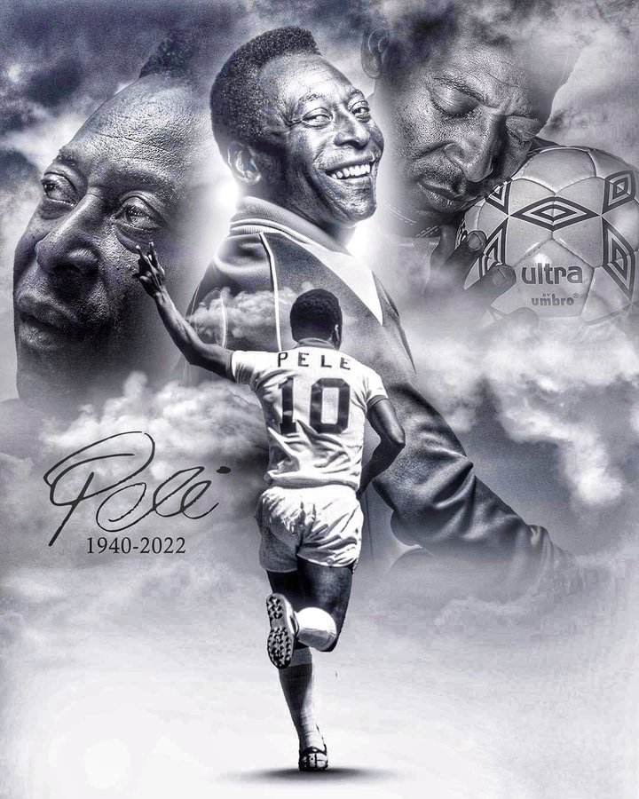

Edson Arantes do Nascimento

Time-line of Pelé
- Edson Arantes do Nascimento was a Brazilian professional footballer who played as a forward Widely regarded as one of the greatest players of all time, he was among the most successful and popular sports figures of the 20th century.
- Edson Arantes do Nascimento better known by his nickname Pelé.Pelé was born Edson Arantes do Nascimento on 23 October 1940 in Três Corações, Minas Gerais, the son of Fluminense footballer Dondinho (born João Ramos do Nascimento) and Celeste Arantes (born November 1922).He was the elder of two siblings,[8] with brother Zoca also playing for Santos, albeit not as successfully.
- He received the nickname "Pelé" during his school days, it is claimed,[by whom?] after mispronouncing the name of his favourite player, Vasco da Gama goalkeeper Bilé.In his autobiography released in 2006, Pelé stated he had no idea what the name means, nor did his old friends, and the word has no meaning in Portuguese.
- Pelé began playing for Santos at age 15 and the Brazil national team at 16. During his international career, he won three FIFA World Cups: 1958, 1962 and 1970, the only player to do so and the youngest player to win a World Cup (17).
- He was nicknamed O Rei (The King) following the 1958 tournamentWith 77 goals in 92 games for Brazil, Pelé held the record as the national team's top goalscorer for over fifty years. At club level, he is Santos's all-time top goalscorer with 643 goals in 659 games. In a golden era for Santos, he led the club to the 1962 and 1963 Copa Libertadores, and to the 1962 and 1963 Intercontinental Cup. Credited with connecting the phrase "The Beautiful Game" with football, Pelé's "electrifying play and penchant for spectacular goals" made him a star around the world, and his teams toured internationally to take full advantage of his popularity.During his playing days, Pelé was for a period the best-paid athlete in the world.
- In 1956, de Brito took Pelé to Santos, an industrial and port city located near São Paulo, to try out for professional club Santos FC, telling the club's directors that the 15-year-old would be "the greatest football player in the world".
- Pelé's first international match was a 2–1 defeat against Argentina on 7 July 1957 at the Maracanã.In that match, he scored his first goal for Brazil aged 16 years and nine months, and he remains the youngest goalscorer for his country.
- On 29 June 1958Pelé became the youngest player to play in a World Cup final match at 17 years and 249 days. He scored two goals in that final as Brazil beat Sweden 5–2 in Stockholm, the capital. Pelé hit the post and then Vavá scored two goals to give Brazil the lead. Pelé's first goal, where he flicked the ball over a defender before volleying into the corner of the net, was selected as one of the best goals in the history of the World Cup.
- He made his senior team debut on 7 September 1956 at the age of 15 against Corinthians de Santo André and had an impressive performance in a 7–1 victory, scoring the first goal in his prolific career during the match
- It was in the 1958 World Cup that Pelé began wearing a jersey with the number 10. The event was the result of disorganization: the leaders of the Brazilian Federation did not allocate the shirt numbers of players and it was up to FIFA to choose the number 10 shirt for Pelé, who was a substitute on the occasion.The press proclaimed Pelé the greatest revelation of the 1958 World Cup, and he was also retroactively given the Silver Ball as the second best player of the tournament, behind Didi.
- Pelé also played in the South American Championship. In the 1959 competition he was named best player of the tournament and was the top scorer with eight goals, as Brazil came second despite being unbeaten in the tournament.He scored in five of Brazil's six games, including two goals against Chile and a hat-trick against Paraguay.
- When the 1962 World Cup started,Pelé was considered the best player in the world.In the first match of the 1962 World Cup in Chile, against Mexico, Pelé assisted the first goal and then scored the second one, after a run past four defenders, to go up 2–0. He got injured in the next game while attempting a long-range shot against Czechoslovakia.
- 1966 World CupPelé was the most famous footballer in the world during the 1966 World Cup in England, and Brazil fielded some world champions like Garrincha, Gilmar and Djalma Santos with the addition of other stars like Jairzinho, Tostão and Gérson, leading to high expectations for them.Brazil was eliminated in the first round, playing only three matches.The World Cup was marked, among other things, for brutal fouls on Pelé that left him injured by the Bulgarian and Portuguese defenders.
- Brazil won the match 4–1, keeping the Jules Rimet Trophy indefinitely, and Pelé received the Golden Ball as the player of the tournament.In terms of his goals and assists throughout the 1970 World Cup, Pelé was directly responsible for 53% of Brazil's goals throughout the tournament.
- 18 July 1971 Pelé's last international match was on 18 July 1971 against Yugoslavia in Rio de Janeiro. With Pelé on the field, the Brazilian team's record was 67 wins, 14 draws, and 11 losses.Brazil never lost a match while fielding both Pelé and Garrincha.Pele's 77 goals (in 92 games) for Brazil saw him hold the record as the national team's top goalscorer for over fifty years until it was surpassed by Neymar (in his 125th game) in September 2023.
- On 29 November, he was admitted to the Albert Einstein Israelite Hospital in São Paulo due to a respiratory infection after he contracted COVID-19 and for reassessment of the treatment of his colon cancer.
- on 29 December 2022 Pelé died on 29 December 2022, at 3:27 pm, at the age of 82, due to multiple organ failure, a complication of colon cancer.Pelé's death certificate stated that he had died of kidney failure, heart failure, bronchopneumonia and colon adenocarcinoma. He was survived by his 100-year-old mother, Celeste, who, given her advanced age, did not understand her son's death; Pelé's sister Maria Lucia do Nascimento described their mother as "in her own little world".
- The national flags of the 211 member associations of FIFA were flown at half-mast at FIFA headquarters in Zürich. Landmarks and stadiums lit up in honour of Pelé included the Christ the Redeemer statue and Maracanã Stadium in Rio de Janeiro,the headquarters of CONMEBOL in Paraguayand Wembley Stadium in London.
- Kigali Pelé Stadium in Rwanda was renamed for him in March 2023 by Rwandan president Paul Kagame and FIFA president Gianni Infantino as part of the 73rd FIFA Congress.On 26 April 2023, the nickname pelé became synonymous with "exceptional, incomparable, unique" in Michaelis Portuguese-language dictionary after a campaign with 125,000 signatories.
- Throughout his career and in his retirement, Pelé received numerous individual and team awards for his performance on the field, his record-breaking achievements, and his legacy in the sport.During his playing days, Pelé was for a period the best-paid athlete in the world. After retiring in 1977, Pelé was a worldwide ambassador for football and made many acting and commercial ventures. In 2010, he was named the honorary president of the New York Cosmos.
For more information, Visit Wikipedia for Edson Arantes do Nascimento (Pelé) [Developed by Dhayanithi P.]